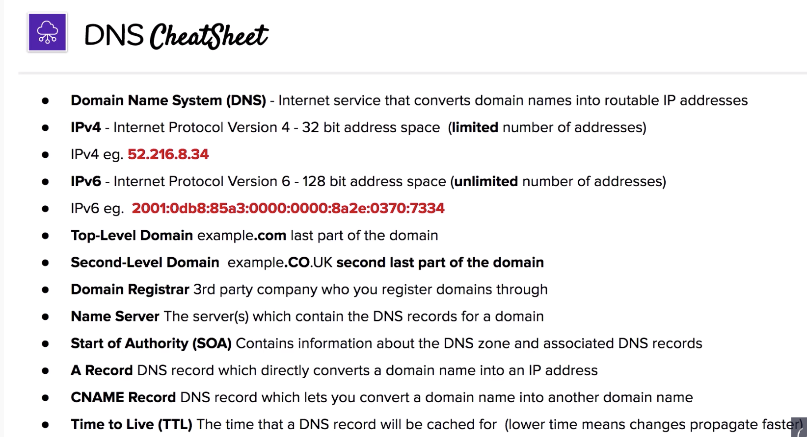
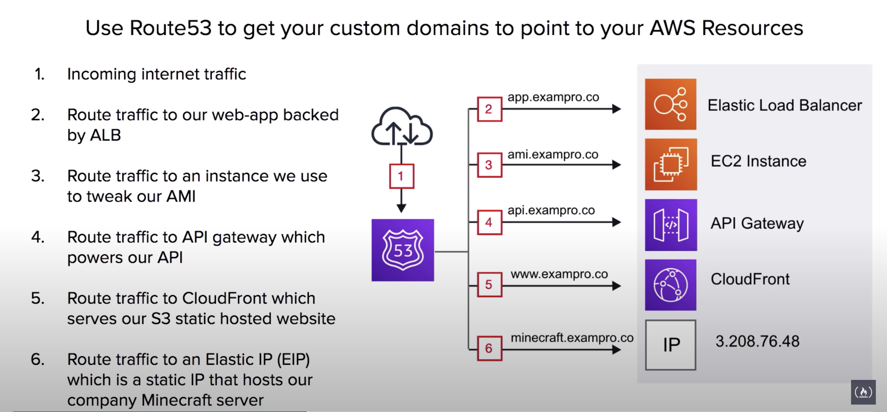
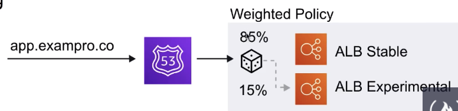

The current note and all other notes titled “AWS SAA Test prep” are based on the 10-hour free tutorial hosted by Andrew Brown and published by freeCodeCamp, which is accessible on YouTube through this link. Special thanks for the maker and publisher of the awesome video!
IP
IP addresses are what uniquely identifies each computer on a network, and allows communication between them using the Internet Protocol.
Domain Registrars
Domain registrars are authorities who have the ability to assign domain names under one or more top-level domains.
Domains get registered through InterNIC, a service provided by the Internet Corporation for Assigned Names and Numbers (ICANN), and enforces the uniqueness of domain names all over the Internet.
After registration all domain names can be found in WhoIS database
Top-Level Domains
eg .com
AWS has its own .aws top level domain name
top level domain names are controlled by the Internet Assigned Numbers Authority(IANA).
Start of Authority (SOA)
Every domain must have an SOA record.
The SOA is a way for the Domain Admins to provide information about the domain. eg.how often it is updated, what is the email address of the domain admin et al.
Address Records (A Records)
An A Record allows you to convert the domain name directly into an IP address.
They can also be used on the root (naked domain name) itself.
CNAME （规范名字） Records
Canonical Names(CNAME) are another fundamental DNS record used to solve one domain name to another- rather than IP address.
The advantage of CNAMES is they are unlikely to change where IP addresses can change over time (if it is a dynamic IP address).
Name Server Records
NS Records are used by top-level domain servers to direct traffic to the DNS server containing the authoritative DNS records.
Typically multiple name servers are provided for redundancy.
If you were managing your DNS records with Route53, the NS records for your domain name will be pointing at the aws servers.
NS record indicates which DNS server is authoritative for that domain (which server contains the actual DNS records).
Time to Live (TTL)
the length of time that a DNS record gets cached on the resolving server or the user’s own local machine.
The lower the TTL, the faster that changes to DNS records will propagate across the internet.

Route53
A Domain Name Service.
You can:
- Register and manage domains
- Create various records
- Implement complex traffic flows (e.g. Blue/Green deploy, failovers)
- Continuously monitor records via health checks
- Resolve VPC’s outside of AWS
Route53 - Use Cases
Use Route53 to get your custom domains to point to your AWS Resources

Route53 - Record sets
We create record sets which allows us to point our naked domain and subdomains via Domain records.
For example, we can send our www subdomain using an A record to point to a specific address; We can use an AAAA record to point to an IPv6 address; We can use a CNAME record to point to another domain name.
Route53 - Alias Record
AWS has its own special Alias Record which extends DNS functionality.
domain name -> AWS resources
Detect IP changes of AWS resources and change accordingly.
Route 53 - Routing Policies
7 types of routing policies.
Simple Routing Policies
default policy. When multiple IP values available, return at random.
Weighted Routing Policies
send a certain percentage of overall traffic to one server.

Latency Based Routing Policies
It decides the latency time between your service and end user based on region.
Requires a latency resource record to be set for the EC2 or ELB resource that hosts you application in each region.
Failover Routing Policies
Create two exactly the same record for the same domain, with failover policy, except that one is marked as “Primary” and the other “Secondary”.
Route 53 automatically monitors health-checks.
Geolocation Routing Policies
Route traffic based on geolocation of where the traffic is from.
Geoproximity Routing Policies
Boundary based, have to use traffic flow to create this. Uses the “Bias” value to decide boundaries.
You can give bias to certain regions so that the areas of traffic origin to be routed to the region will increase.
Multi-Value Answer Policies
Exactly like simple routing, except that it uses health check instead of totally random.
Route 53 Traffic Flow
A visual record to create sophisticated routing configurations.
Supports versioning.
$50 per policy record per month.
Visual Editor.
Route53 - Health Checks
Check health every 30s by default. Can be reduced to 10s.
A health check can initial a failover if status is returned unhealthy.
A CloudWatch Alarm can be created to alert you of status unhealthy.
A health check can monitor other health checks to create a chain of reactions.
Route53 - Resolver
A regional service that lets you regionally route DNS queries between your VPCs and your network.
This is how you do for Hybrid Environment.
AWS Certificate Manager
ACM makes it easy to provision, manage, deploy and renew SSL/TLS certificates on the AWS platform.
To use HTTPS protocol, provision a SSL/TLS certificate, and attach it to the HTTPS listener in you ALB.